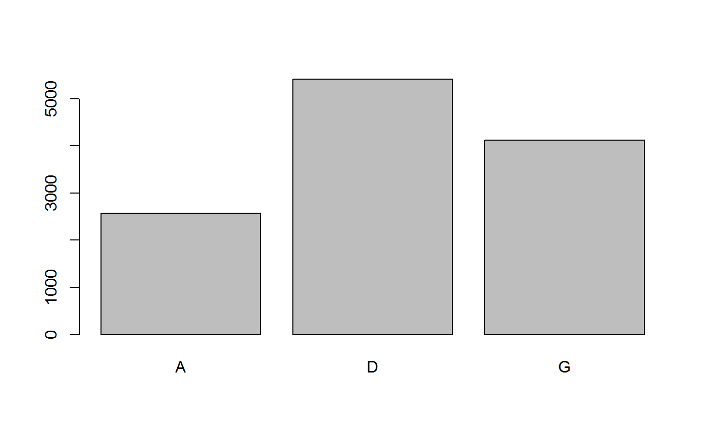
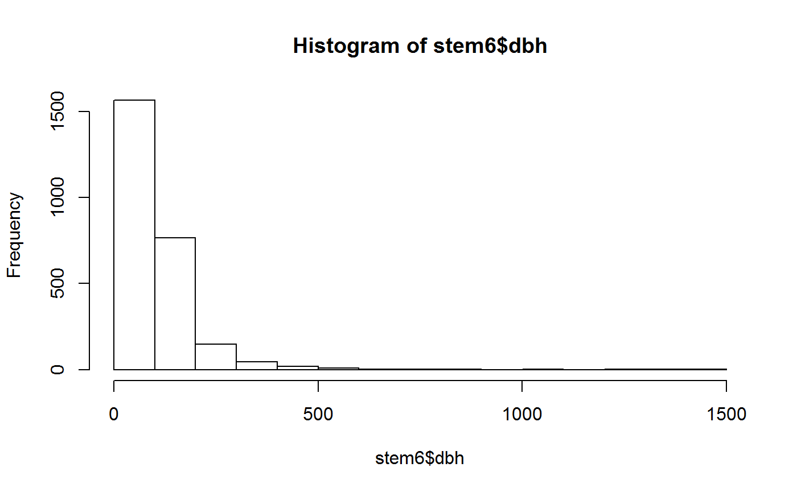
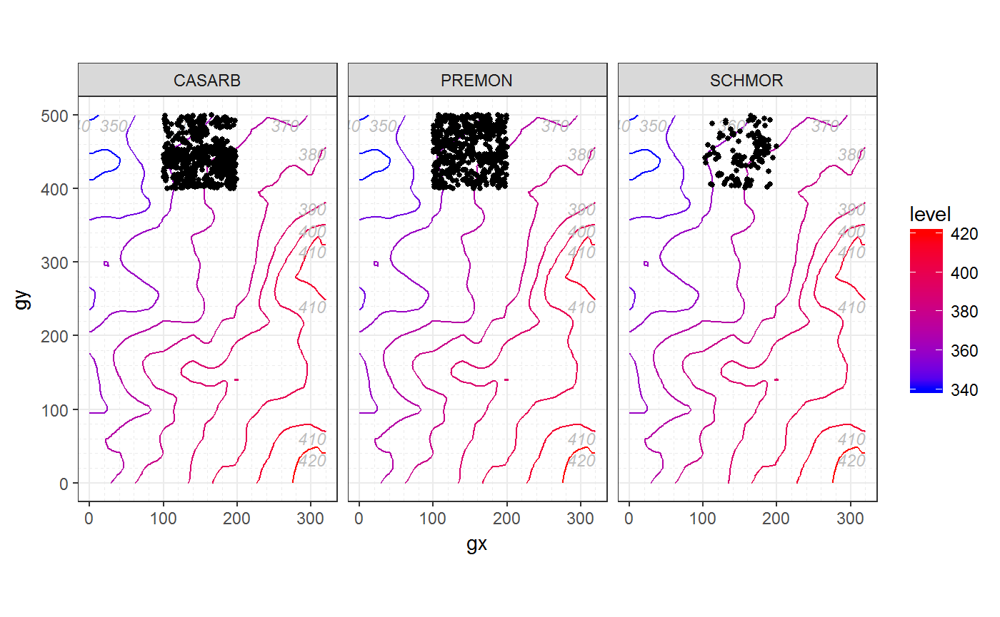
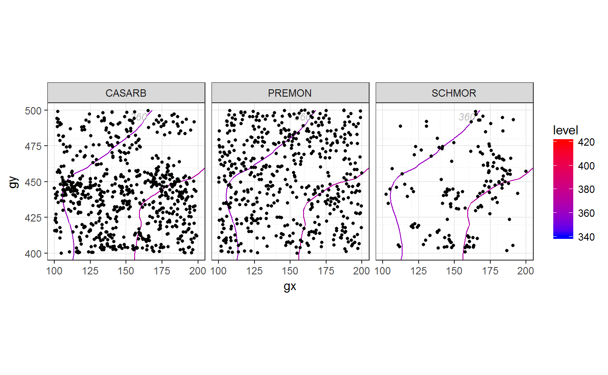

This article shows some of the key features of fgeo applied to an expoloratory data analysis. For a deeper and general approach to exploratory data analysis see this book section. A version adapted for ForestGEO is available here.
In every new R session you need to “open” fgeo with library().
library(fgeo)
#> -- Attaching packages --------------------------------------------------- fgeo 0.0.0.9000 --
#> v bciex 0.0.0.9000 v fgeo.demography 0.0.0.9000
#> v fgeo.abundance 0.0.0.9004 v fgeo.habitat 0.0.0.9006
#> v fgeo.base 0.0.0.9001 v fgeo.map 0.0.0.9204
#> v fgeo.data 0.0.0.9002 v fgeo.tool 0.0.0.9003
#> You may load your own data. Here I’ll use data from the fgeo.data package – which comes with fgeo.
str(fgeo_index_datasets())
#> 'data.frame': 46 obs. of 2 variables:
#> $ package: chr "bciex" "bciex" "bciex" "bciex" ...
#> $ dataset: chr "bci_elevation" "bci_habitat" "bci_mat" "bci_plotdim" ...I’ll use a dataset of stems censused in one hectare in the forest plot Luquillo, Puerto Rico (https://forestgeo.si.edu/sites/north-america/luquillo).
stem <- luquillo_stem_1ha
str(stem)
#> Classes 'tbl_df', 'tbl' and 'data.frame': 72618 obs. of 19 variables:
#> $ treeID : int 46 47 47 47 47 47 47 47 47 47 ...
#> $ stemID : int 46 47 48 49 50 51 52 53 54 55 ...
#> $ tag : chr "100001" "100008" "100008" "100008" ...
#> $ StemTag : chr "100001" "100002" "100003" "100004" ...
#> $ sp : chr "PSYBRA" "PSYBRA" "PSYBRA" "PSYBRA" ...
#> $ quadrat : chr "921" "921" "921" "921" ...
#> $ gx : num 164 165 165 165 165 ...
#> $ gy : num 416 416 416 416 416 ...
#> $ MeasureID: int 46 47 48 49 50 51 52 53 54 55 ...
#> $ CensusID : int 1 1 1 1 1 1 1 1 1 1 ...
#> $ dbh : num 22.6 15 12.8 10.9 13.4 10.8 15.4 16.6 13.3 11.1 ...
#> $ pom : chr "1.3" "1.3" "1.3" "1.3" ...
#> $ hom : num 1.3 1.3 1.3 1.3 1.3 1.3 1.3 1.3 1.3 1.3 ...
#> $ ExactDate: num 8610 8610 8610 8610 8610 8610 8610 8610 8610 8610 ...
#> $ DFstatus : chr "alive" "alive" "alive" "alive" ...
#> $ codes : chr "MAIN;A" "SPROUT;A" "SPROUT;A" "SPROUT;A" ...
#> $ countPOM : num 1 1 1 1 1 1 1 1 1 1 ...
#> $ status : chr "A" "A" "A" "A" ...
#> $ date : num NA NA NA NA NA NA NA NA NA NA ...For a description of the columns see ?data_dictionary.
str(data_dictionary)
#> Classes 'tbl_df', 'tbl' and 'data.frame': 242 obs. of 3 variables:
#> $ table : chr "Census" "Census" "Census" "Census" ...
#> $ column : chr "CensusID" "PlotID" "PlotCensusNumber" "StartDate" ...
#> $ description: chr "Primary key, an integer automatically generated to uniquely identify a census." "Foreign Key to Site table." "Integer census number for an individual plot, 1=first census, 2=second census, etc. If there are more than one "| __truncated__ "Date on which the first measurement of the census was taken." ...
cols <- names(stem)
subset(data_dictionary, column %in% cols)
#> # A tibble: 20 x 3
#> table column description
#> <chr> <chr> <chr>
#> 1 Census CensusID Primary key, an integer automatically~
#> 2 CensusQuadrat CensusID Foreign Key to Census table.
#> 3 DataCollection CensusID Foreign Key to Census table.
#> 4 DBH CensusID Foreign Key to Census table.
#> 5 DBH ExactDate Date on which the measurement was take~
#> 6 DBHAttributes CensusID Foreign Key to Census table.
#> 7 Measurement MeasureID Primary key, an integer automatically~
#> 8 Measurement CensusID Foreign Key to Census table.
#> 9 Measurement ExactDate "Date on which measurement has been do~
#> 10 MeasurementAttributes MeasureID Foreign Key to Measurement table.
#> 11 MeasurementAttributes CensusID Foreign Key to Census table.
#> 12 RemeasAttribs CensusID Foreign Key to Census table.
#> 13 Remeasurement CensusID Foreign Key to Census table.
#> 14 Remeasurement ExactDate "Date of remeasurement. (format is yy~
#> 15 SpeciesInventory CensusID Foreign Key to Census table.
#> 16 Stem StemTag The stem tag used in the field to iden~
#> 17 TreeAttributes CensusID Foreign Key to Census table.
#> 18 ViewFullTable StemTag The stem tag used in the field to iden~
#> 19 ViewFullTable CensusID Foreign Key to Census table.
#> 20 ViewFullTable ExactDate Date on which the measurement was take~This dataset comes with multiple censuses. I’ll pick only the latest one.
Two columns that are commonly useful in ForestGEO datasets are status and dbh (diameter at breast height). Let’s begin by understanding what type of variables they are. For this, base R provides useful functions.
status is a categorical variable.
We can count the number of observations in each category with table(), then visualize the result with barplot().

dbh is a continuous numeric variable.
summary(stem6$dbh)
#> Min. 1st Qu. Median Mean 3rd Qu. Max. NA's
#> 10.00 21.77 56.00 93.71 142.00 1405.00 9539(Note the missing values (NA’s).)
And we can visualize its distribution with hist().

Unfortunately hist() dropped missing values silently. But we can better understand how missing values of dbh relate to status by extracting only the columns dbh and status, and picking only the rows where dbh is missing.
dbh_status <- stem6[c("dbh", "status")]
missing <- subset(dbh_status, is.na(dbh))
unique(missing)
#> # A tibble: 3 x 2
#> dbh status
#> <dbl> <chr>
#> 1 NA D
#> 2 NA G
#> 3 NA AAnother approach is to count missing values.
missing <- transform(stem6, na = ifelse(is.na(dbh), TRUE, FALSE))
table(missing$na, missing$status)
#>
#> A D G
#> FALSE 2564 0 0
#> TRUE 4 5416 4119We learn that dbh is missing where a tree is dead (status = A) or gone (status = G). This makes sense and, depending on the type of analysis we want to do, we may want to keep or remove missing values.
Now that we understand out data are read to clean it, for example, by picking alive trees only. At ForestGEO, working with status is so common that fgeo provides a specialized function.
fgeo_funs <- fgeo_index_functions()
subset(fgeo_funs, grepl("status", fun))
#> package fun
#> 49 fgeo.base drop_status
#> 69 fgeo.base pick_status
#> 122 fgeo.tool add_status_tree
#> 136 fgeo.tool filter_statusIn stem6, the variable status records the status of each individual stem. How can we determine the status of a tree based on the status of each of its stems? That is the job of add_status_tree().
stem6 <- add_status_tree(stem6, status_a = "A", status_d = "D")
alive_trees <- subset(stem6, status_tree == "A")
# Note that alive trees may have some missing, gone or dead stems
some_cols <- c( "treeID", "status_tree", "stemID", "status")
example_tree <- 46
subset(alive_trees, treeID == example_tree, some_cols)
#> # A tibble: 2 x 4
#> treeID status_tree stemID status
#> <int> <chr> <int> <chr>
#> 1 46 A 46 D
#> 2 46 A 114033 Gdbh rangeAnother very common task when working with ForestGEO data is to pick stems of a particular dbh range.
subset(fgeo_funs, grepl("dbh", fun))
#> package fun
#> 64 fgeo.base pick_dbh_max
#> 65 fgeo.base pick_dbh_min
#> 66 fgeo.base pick_dbh_over
#> 67 fgeo.base pick_dbh_underPick stems of 10 mm or more.
Calculate the total abundance of stems and trees.
abundance_stem(non_missing)
#> # A tibble: 1 x 1
#> n
#> <int>
#> 1 2564
abundance_tree(non_missing)
#> # A tibble: 1 x 1
#> n
#> <int>
#> 1 2319Calculate the abundance of trees by species.
by_sp <- group_by(non_missing, sp)
n_by_sp <- abundance_tree(by_sp)
n_by_sp
#> # A tibble: 70 x 2
#> sp n
#> <chr> <int>
#> 1 ALCFLO 11
#> 2 ALCLAT 15
#> 3 ANDINE 1
#> 4 ANTOBT 1
#> 5 ARDGLA 1
#> 6 BUCTET 11
#> 7 BYRSPI 25
#> 8 CALCAL 2
#> 9 CASARB 489
#> 10 CASSYL 58
#> # ... with 60 more rowsAbove you saw that abundance_tree(DATA) and abundance_stem(DATA) generalize to count_distinct(DATA, stemID) and count_distinct(DATA, stemID). An even greater generalization is count(). fgeo borrows the function count() (and some friends) from the dplyr package. Today, dplyr::count() appears to be the simplest, the most general and powerful tool to count things. fgeo imports and reexports dplyr::count() (and friends) so it’s available when you run library(fgeo).
Which are the three most abundant tree species?
top3 <- pick_top(n_by_sp, n, -3)
top3
#> # A tibble: 3 x 2
#> sp n
#> <chr> <int>
#> 1 CASARB 489
#> 2 PREMON 507
#> 3 SCHMOR 151Now we can subset the alive_trees of only the top3 species.
fgeo includes some functions specialized in mapping ForestGEO’s data.
subset(fgeo_funs, grepl("map", fun))
#> package fun
#> 100 fgeo.map map_elev
#> 101 fgeo.map map_gx_gy
#> 102 fgeo.map map_gx_gy_elev
#> 103 fgeo.map map_quad_header
#> 104 fgeo.map map_sp_elev
#> 105 fgeo.map map_tag_header
#> 106 fgeo.map maply_quad
#> 107 fgeo.map maply_sp_elev
#> 108 fgeo.map maply_tag
#> 111 fgeo.map theme_map_quad
#> 112 fgeo.map theme_map_tagMap the most abundant species.
# luquillo_elevation comes with fgeo
p <- map_sp_elev(picked_stems, elevation = luquillo_elevation, point_size = 1)
p
Tweak to focus on the hectare available in the data.
p1 <- limit_gx_gy(p, xlim = c(100, 200), ylim = c(400, 500))
#> Scale for 'x' is already present. Adding another scale for 'x', which
#> will replace the existing scale.
#> Scale for 'y' is already present. Adding another scale for 'y', which
#> will replace the existing scale.
p1
Let’s determine the species-habitat associations using a torus transalion test.
I’ll follow closely the help file of tt_test(). Reading the description of the argument census I see that the original example used a ‘tree’ table – not a stem table. I’ll use luquillo_tree6_random, which contains a small sample of randomly chosen trees accross the entire plot (see ?luquillo_tree6_random`).
As usual, I’ll pick alive trees of 10 mm or more (for details see previous sections). The variable status of ‘tree’ tables directly represent the status of each tree (see ?census_description). I’ll focus on trees with status “A” (alive).
dbh10plus <- pick_dbh_min(tree, 10)
chosen_trees <- pick_status(dbh10plus, "A")
unique(chosen_trees$status)
#> [1] "A"Note that tt_test() is recommended for sufficiently abundant species:
You should only try to determine the habitat association for sufficiently abundant species - in a 50-ha plot, a minimum abundance of 50 trees/species has been used.
– ?tt_test()
# Find sufficiently abundant species
by_sp <- group_by(tree, sp)
n_by_sp <- abundance_tree(by_sp)
n_by_sp
#> # A tibble: 73 x 2
#> sp n
#> <chr> <int>
#> 1 ALCFLO 3
#> 2 ALCLAT 1
#> 3 ANDINE 2
#> 4 ARDGLA 2
#> 5 ARTALT 1
#> 6 BRUPOR 1
#> 7 BUCTET 8
#> 8 BYRSPI 11
#> 9 CALCAL 1
#> 10 CASARB 94
#> # ... with 63 more rows
n_sp50plus <- subset(n_by_sp, n > 50)
n_sp50plus
#> # A tibble: 3 x 2
#> sp n
#> <chr> <int>
#> 1 CASARB 94
#> 2 PREMON 256
#> 3 SLOBER 84We’ll need habitat data. Or at least elevation data – with which to create habitat data with fgeo_habitat().
# See ?luquillo_habitat
habitat <- luquillo_habitat
# Same
habitat <- fgeo_habitat(luquillo_elevation, gridsize = 20, n = 4)
str(habitat)
#> Classes 'fgeo_habitat', 'tbl_df', 'tbl' and 'data.frame': 6400 obs. of 3 variables:
#> $ gx : int 0 0 0 0 0 0 0 0 0 0 ...
#> $ gy : int 0 5 10 15 20 25 30 35 40 45 ...
#> $ habitats: int 1 1 1 1 1 1 1 1 1 1 ...And now we are ready to run the test.
The output of tt_test() is a list. Large lists are ackward to view – unless you use View() in RStudio.
Alternatively, transform the list to a dataframe.
to_df(tt)
#> metric sp value
#> 1 N.Hab.1 CASARB 2.800000e+01
#> 2 Gr.Hab.1 CASARB 2.551100e+04
#> 3 Ls.Hab.1 CASARB 8.600000e+01
#> 4 Eq.Hab.1 CASARB 3.000000e+00
#> 5 Rep.Agg.Neut.1 CASARB 1.000000e+00
#> 6 Obs.Quantile.1 CASARB 9.965234e-01
#> 7 N.Hab.2 CASARB 1.200000e+01
#> 8 Gr.Hab.2 CASARB 3.691000e+03
#> 9 Ls.Hab.2 CASARB 2.189200e+04
#> 10 Eq.Hab.2 CASARB 1.700000e+01
#> 11 Rep.Agg.Neut.2 CASARB 0.000000e+00
#> 12 Obs.Quantile.2 CASARB 1.441797e-01
#> 13 N.Hab.3 CASARB 9.000000e+00
#> 14 Gr.Hab.3 CASARB 1.939000e+03
#> 15 Ls.Hab.3 CASARB 2.364000e+04
#> 16 Eq.Hab.3 CASARB 2.100000e+01
#> 17 Rep.Agg.Neut.3 CASARB 0.000000e+00
#> 18 Obs.Quantile.3 CASARB 7.574219e-02
#> 19 N.Hab.4 CASARB 1.700000e+01
#> 20 Gr.Hab.4 CASARB 1.402500e+04
#> 21 Ls.Hab.4 CASARB 1.151600e+04
#> 22 Eq.Hab.4 CASARB 5.900000e+01
#> 23 Rep.Agg.Neut.4 CASARB 0.000000e+00
#> 24 Obs.Quantile.4 CASARB 5.478516e-01
#> 25 N.Hab.1 PREMON 5.800000e+01
#> 26 Gr.Hab.1 PREMON 1.219300e+04
#> 27 Ls.Hab.1 PREMON 1.335700e+04
#> 28 Eq.Hab.1 PREMON 5.000000e+01
#> 29 Rep.Agg.Neut.1 PREMON 0.000000e+00
#> 30 Obs.Quantile.1 PREMON 4.762891e-01
#> 31 N.Hab.2 PREMON 8.000000e+01
#> 32 Gr.Hab.2 PREMON 2.555800e+04
#> 33 Ls.Hab.2 PREMON 4.100000e+01
#> 34 Eq.Hab.2 PREMON 1.000000e+00
#> 35 Rep.Agg.Neut.2 PREMON 1.000000e+00
#> 36 Obs.Quantile.2 PREMON 9.983594e-01
#> 37 N.Hab.3 PREMON 5.000000e+01
#> 38 Gr.Hab.3 PREMON 4.717000e+03
#> 39 Ls.Hab.3 PREMON 2.086200e+04
#> 40 Eq.Hab.3 PREMON 2.100000e+01
#> 41 Rep.Agg.Neut.3 PREMON 0.000000e+00
#> 42 Obs.Quantile.3 PREMON 1.842578e-01
#> 43 N.Hab.4 PREMON 4.600000e+01
#> 44 Gr.Hab.4 PREMON 9.420000e+02
#> 45 Ls.Hab.4 PREMON 2.464900e+04
#> 46 Eq.Hab.4 PREMON 9.000000e+00
#> 47 Rep.Agg.Neut.4 PREMON 0.000000e+00
#> 48 Obs.Quantile.4 PREMON 3.679687e-02
#> 49 N.Hab.1 SLOBER 1.200000e+01
#> 50 Gr.Hab.1 SLOBER 6.789000e+03
#> 51 Ls.Hab.1 SLOBER 1.877700e+04
#> 52 Eq.Hab.1 SLOBER 3.400000e+01
#> 53 Rep.Agg.Neut.1 SLOBER 0.000000e+00
#> 54 Obs.Quantile.1 SLOBER 2.651953e-01
#> 55 N.Hab.2 SLOBER 1.800000e+01
#> 56 Gr.Hab.2 SLOBER 1.356900e+04
#> 57 Ls.Hab.2 SLOBER 1.198200e+04
#> 58 Eq.Hab.2 SLOBER 4.900000e+01
#> 59 Rep.Agg.Neut.2 SLOBER 0.000000e+00
#> 60 Obs.Quantile.2 SLOBER 5.300391e-01
#> 61 N.Hab.3 SLOBER 1.800000e+01
#> 62 Gr.Hab.3 SLOBER 1.829900e+04
#> 63 Ls.Hab.3 SLOBER 7.270000e+03
#> 64 Eq.Hab.3 SLOBER 3.100000e+01
#> 65 Rep.Agg.Neut.3 SLOBER 0.000000e+00
#> 66 Obs.Quantile.3 SLOBER 7.148047e-01
#> 67 N.Hab.4 SLOBER 1.800000e+01
#> 68 Gr.Hab.4 SLOBER 1.561400e+04
#> 69 Ls.Hab.4 SLOBER 9.924000e+03
#> 70 Eq.Hab.4 SLOBER 6.200000e+01
#> 71 Rep.Agg.Neut.4 SLOBER 0.000000e+00
#> 72 Obs.Quantile.4 SLOBER 6.099219e-01